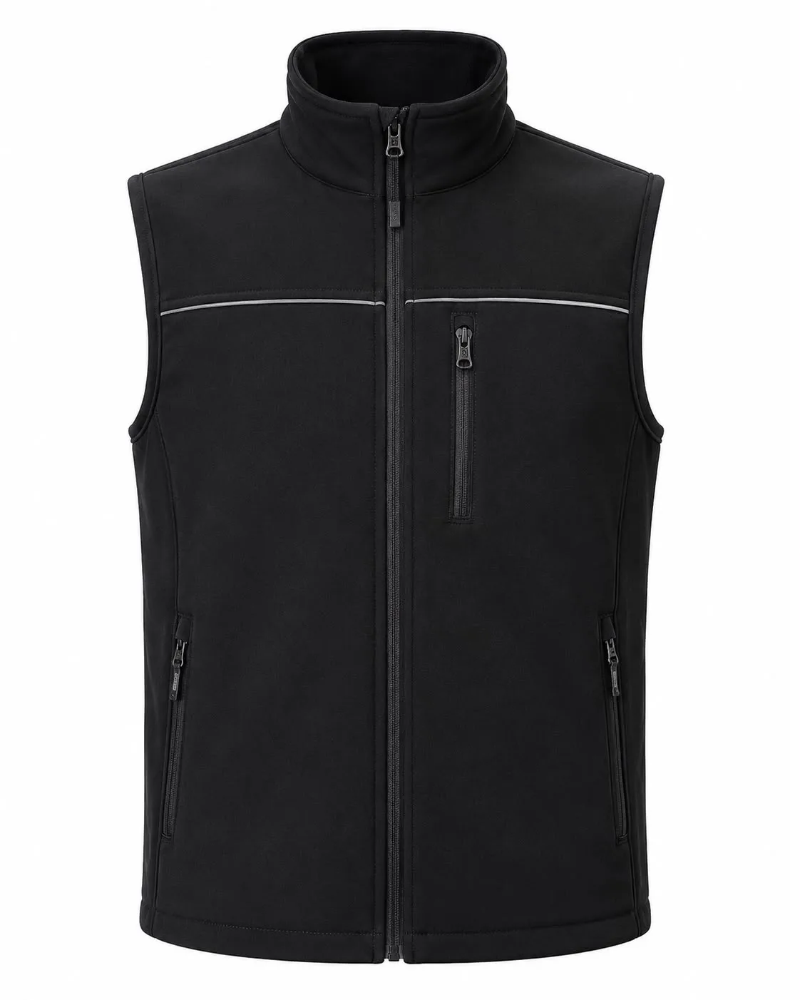

Kumaş
İkazlık, dokuma, softshell, polar veya dolgulu modele uygun malzeme
Reflektörlü iş yeleği üretimi: ikaz, çok cepli, polar, softshell ve dolgulu modeller; kurumsal renk ve logo uygulamasıyla toplu teklif alın.

Reflektörlü iş yeleği, personelin hareketini sınırlamadan görünürlüğü ve görev tanımını destekleyen tamamlayıcı üründür. İkaz yeleği, çok cepli saha yeleği, softshell ya da dolgulu model seçenekleri aynı ihtiyaca cevap vermez; çalışma ortamı doğru tanımlanmalıdır.
Yüksek görünürlük gereken alanlarda zemin rengi, reflektif bant genişliği ve yerleşimi risk değerlendirmesiyle ele alınır. Çok cepli modellerde yük dağılımı, fermuar erişimi ve ekipmanın düşmesini önleyen kapamalar önemlidir. Polar ve dolgulu yeleklerde sıcaklık ile hareket dengesi ayrıca incelenir.
Lojistik sahasında araç trafiği, inşaatta açık alan, fabrikada bölüm tanımı, markette hızlı görev geçişi ve güvenlikte uzun vardiya farklı yelek düzenleri gerektirir. Ürün bir kişisel koruyucu donanım standardını karşılayacaksa ilgili belge ve sınıf ayrıca doğrulanmalıdır.
Logo baskısı reflektif alanı kapatmayacak ve görünürlük dengesini bozmayacak konuma yerleştirilir. Kalın yeleklerde nakış, ince ikazlık kumaşta transfer veya baskı değerlendirilebilir. Numune onayıyla renk, bant ve logo yerleşimi tekrar sipariş için sabitlenir.
Reflektörlü İş Yeleği satın alımında teknik şartname hazırlanırken şu malzeme çerçevesi açıkça yazılmalıdır: İkazlık, dokuma, softshell, polar veya dolgulu modele uygun malzeme. Bunun yanında cep, omuz, fermuar ve reflektif bant bağlantılarında sağlam uygulama ölçülebilir bir kabul noktası olarak numunede incelenir. Beden dağılımı yalnız çalışan sayısından çıkarılmaz; görevin hareket biçimi, ürünün alt veya üst katmanla giyilmesi ve vardiya boyunca ihtiyaç duyulan rahatlık da hesaba katılır. İlk siparişte onaylanan fiziksel numunenin ürün kodu, kumaş referansı, renk tonu ve aksesuar bilgileriyle saklanması; sonraki alımlarda farklı yorumların önüne geçer ve şubeler arasında ortak bir kıyafet standardı kurulmasını kolaylaştırır.
Lojistik, inşaat, fabrika, güvenlik, belediye, market ve servis için hazırlanan reflektörlü iş yeleği projelerinde kalite kontrol yalnız son görünüşe bırakılmaz. araç trafiği, ekipman taşıma ve sık giyip çıkarmaya göre tasarım üretim öncesi kararın merkezindedir; kesim ölçüsü, kritik dikişler, logo konumu ve paket içeriği aşamalı olarak takip edilir. Satın alma ekibi adet, çalışan görevleri, teslimat noktaları ve hedef tarihi teklif formunda paylaştığında gereksiz özellikler ayrıştırılabilir, gerekli işlevler ise yazılı kapsama alınabilir. Böylece tekliflerin aynı teknik temel üzerinden karşılaştırılması, beden değişimlerinin yönetilmesi ve yeni personel için devam siparişinin doğru modelden açılması mümkün olur. Üretim çözümü, yalnız ilk teslimatı değil ürünün kurum içindeki kullanım ve yenileme düzenini de destekleyecek biçimde planlanır.
Kesin teknik özellikler kullanım alanı, adet ve onaylanan numuneye göre belirlenir.
İkazlık, dokuma, softshell, polar veya dolgulu modele uygun malzeme
Cep, omuz, fermuar ve reflektif bant bağlantılarında sağlam uygulama
Araç trafiği, ekipman taşıma ve sık giyip çıkarmaya göre tasarım
Göğüs ve sırtta baskı, transfer, nakış veya arma
Logo ve kumaş yüzeyine göre DTF, transfer veya serigrafi değerlendirmesi
Kurumsal kartela, garni ve aksesuarlarla proje bazlı renk planı
Lojistik, inşaat, fabrika, güvenlik, belediye, market ve servis. Her sektörün hareket, bakım, görünürlük ve kurumsal temsil beklentisi ayrı değerlendirilir.
Ürün standardı yazılı bilgi ve numune kararıyla oluşturulur.
Toplu satın alma öncesinde üretim, adet, kumaş ve logo kararları.
Özel üretimde minimum sipariş 50 adettir. Model, kumaş, renk, beden dağılımı ve logo uygulaması toplam proje kapsamında değerlendirilir.
Göğüs ve sırtta baskı, transfer, nakış veya arma. Uygulama yöntemi logo ayrıntısı, kumaş yüzeyi, renk ve bakım koşuluna göre numune aşamasında belirlenir.
İkazlık, dokuma, softshell, polar veya dolgulu modele uygun malzeme. Kesin seçim çalışma ortamı, kullanım süresi, hareket yoğunluğu ve bakım düzeni görüldükten sonra yapılır.
Proje kapsamına göre numune planlanabilir. Numunede kalıp, beden, hareket, kumaş, aksesuar ve logo yerleşimi kontrol edilerek seri üretim ayrıntıları yazılı onaya bağlanır.
Kumaş ve aksesuar seçenekleri elverdiğinde kurum renkleri ana yüzey, garni, biye veya tamamlayıcı parçalarda uygulanabilir. Ton kararı fiziksel kartela ya da numune üzerinden doğrulanır.
Yaklaşık adet, görev ve sektör, beden dağılımı, tercih edilen model, renk, logo dosyası, teslimat şehri ve hedef tarih paylaşılırsa yazılı teklif kapsamı daha doğru hazırlanabilir.
Birlikte kullanılan ürün gruplarını aynı renk ve logo standardında planlayın.
Kurumsal üretim, kumaş ve logo seçeneklerini inceleyin.
Ürün sayfasına gidin →Kurumsal üretim, kumaş ve logo seçeneklerini inceleyin.
Ürün sayfasına gidin →Kurumsal üretim, kumaş ve logo seçeneklerini inceleyin.
Ürün sayfasına gidin →Kurumsal üretim, kumaş ve logo seçeneklerini inceleyin.
Ürün sayfasına gidin →Lokasyon bazlı planlama, teslimat ve kurumsal iş kıyafeti yaklaşımımızı inceleyin.
Adet, beden dağılımı, logo dosyası ve teslimat hedefinizi paylaşın; yazılı üretim kapsamını oluşturalım.